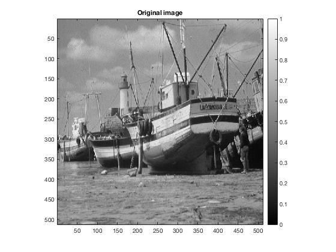
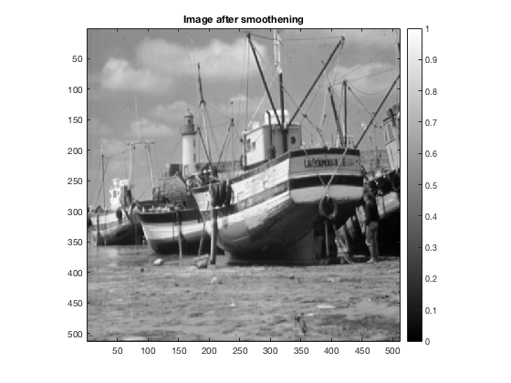
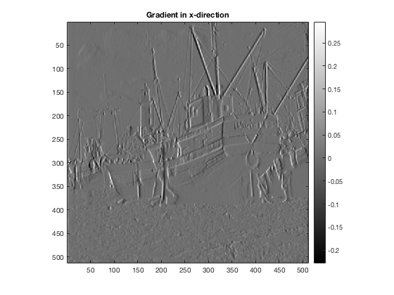
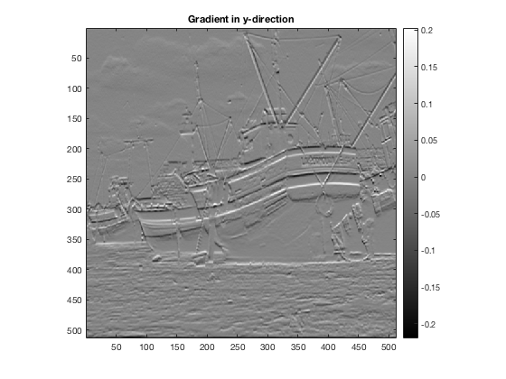
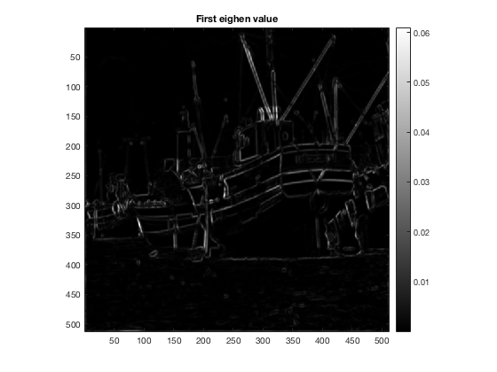
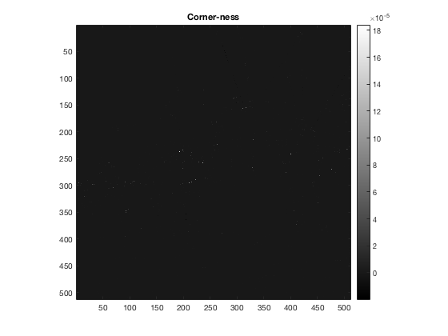
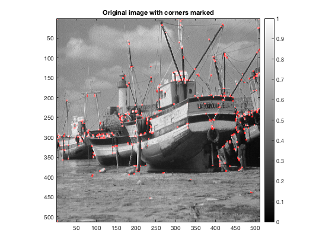

Contents
MyMainScript
tic;
Your code here
Loading and rescaling the image to [0,1]
im = load('../data/boat.mat');
im = im.imageOrig;
im = mat2gray(im);
Tuned parameters
sigma_smooth = 0.81;
sigma_w = 0.86;
k = 0.05;
fprintf('Tuned sigma for smoothening image gradients = %f\n', sigma_smooth);
fprintf('Tuned sigma for w(u,v) = %f\n', sigma_w);
fprintf('Tuned k for corner-ness measure = %f\n', k);
[cn, ev1, ev2, ix, iy, im_s] = myHarrisCornerDetector(im, sigma_smooth, sigma_w, k);
Tuned sigma for smoothening image gradients = 0.810000
Tuned sigma for w(u,v) = 0.860000
Tuned k for corner-ness measure = 0.050000
Elapsed time is 0.038522 seconds.
Using corner-ness measure to mark the corners
im_t = im;
im_t(imfilter(cn>5e-6, ones(4))) = 1;
im_r(:,:,1) = im_t;
im_r(:,:,2) = im;
im_r(:,:,3) = im;
Displaying
printImage(im, 'Original image');
printImage(mat2gray(im_s), 'Image after smoothening');
printImage(ix, 'Gradient in x-direction');
printImage(iy, 'Gradient in y-direction');
printImage(ev1, 'First eighen value');
printImage(ev2, 'Second eighen value');
printImage(cn, 'Corner-ness');
printImage(im_r, 'Original image with corners marked');
toc;
Elapsed time is 0.623369 seconds.
      